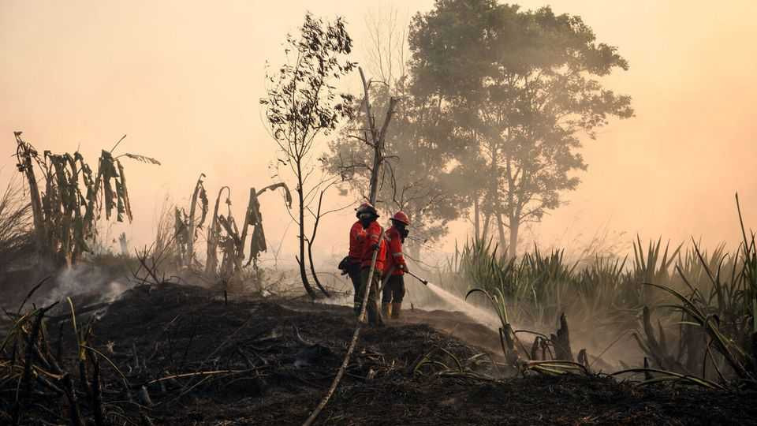
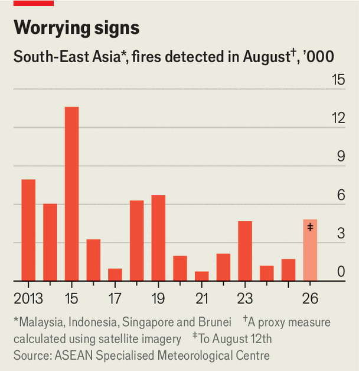

South-East Asia braces for more smoke from Indonesia
Has the region learned anything from past crises?

Aug 13th 2026
In 2015, as South-East Asia was engulfed in toxic smog caused by fires in Indonesia, Jusuf Kalla, the country’s vice-president at the time, suggested that his neighbours needed a change in perspective. “For 11 months they enjoyed nice air from Indonesia and they never thanked us,” he said. South-East Asians flocked to a satirical website created to express gratitude to Indonesia. The site has registered more than 34m votes of sarcastic thanks.
That number may soon grow. Fears of another severe haze are rising as fires rage in Indonesia. Weather-watchers estimate that the number of blazes detected across the island of Borneo in the first 12 days of August alone exceeds the figure registered during the entire month in each of the past seven years (see chart). The smoke is already forcing officials to act. In Pontianak, the capital of the Indonesian province of West Kalimantan, schools have shut. In neighbouring Sarawak, in Malaysia, officials urged people to stay indoors. Singapore has put its own responders on standby.

Meteorologists fear that much worse is to come. El Niño, a weather pattern associated with unusually warm waters in the Pacific, tends to cause drier conditions in the region. This increases the chance of fires, especially on Indonesia’s peatlands, where the carbon-rich soil is more combustible and where fires smouldering underground are hard to extinguish. Many climatologists think that this year’s El Niño will turn out to be the strongest yet, raising concerns about a haze episode comparable to the one in 2015.
That would be a disaster. The smog in 2015 caused some 100,000 excess deaths in Indonesia, Malaysia and Singapore, according to one study. But there was also a heavy economic toll: the World Bank put Indonesia’s losses at $16.1bn, almost 2% of GDP. Economies in the region are already vulnerable, having been hit to varying degrees by the war in Iran.
That war could also contribute to the haze. The blockade of the Strait of Hormuz has pushed up fuel and fertiliser costs, prompting the Indonesian government to mandate greater use of biofuels. This, in turn, is driving up the demand for palm oil, putting pressure on farmers and plantation companies to clear more land with fire.
The region may be better prepared than it was a decade ago. Better satellite monitoring has improved forecasts. A centre in Singapore tracks fires and smoke across the region and provides early warnings, allowing governments to implement public-health measures. In April ASEAN, the regional bloc, inaugurated the secretariat of a new haze-control centre in Jakarta, Indonesia’s capital, which seeks to improve co-ordination between governments.
But for all the machinery of regional co-operation, it still lacks much bite. ASEAN has had an agreement on transboundary haze since 2002, but implementation and enforcement rest with national governments. Its fund to pay for anti-haze resources, such as water-bombing aircraft and other firefighting equipment, relies on voluntary contributions and remains small.
Ultimately, the severity of haze-related problems this year will depend on what happens in Indonesia. After the disaster of 2015, Joko Widodo, then the president, made prevention a priority. His successor, Prabowo Subianto, has kept much of that emphasis. Last year he created a new department to tackle blazes, and strengthened patrols, aerial surveillance and emergency teams. In the coming weeks, they face trial by fire. ■
For exclusive coverage of Asian politics, economics and security, sign up to Asia Bulletin, our weekly subscriber-only newsletter.